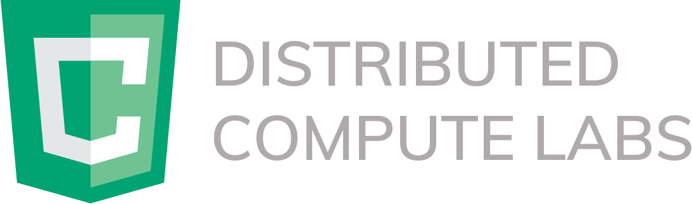
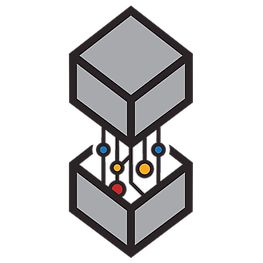

Portfolio
Cloud Computing & Machine Learning Internship

I worked at Distributed Compute Labs for 4 months as an R&D Intern. During my time at DCL, I developed
new features and improvements to the back-end network, produced production quality code to the core platform
and designed programs to accelerate image classification using Deep Learning. My back-end development included
designing and implementing a control framework for agents in a distributed network. This enabled developers to
receive status updates from remote compute stations and send alerts or commands to redistribute tasks if needed.
 In addition to my work with the core platform, I also researched and developed new methods to accelerate the training times of Deep Learning models. Specifically,
I tested different methods to parallelize stochastic gradient decent in neural networks. This enabled me to develop
a unique solution to train an image classification model using the compute power made availible by DCL. The program
accepts saved Keras models that can be built using Python and TensorFlow, and converts it to TensorFlow.js.
You can select custom data that you want to train the model with, and configure features such as batch size and worker count
if desired.
In addition to my work with the core platform, I also researched and developed new methods to accelerate the training times of Deep Learning models. Specifically,
I tested different methods to parallelize stochastic gradient decent in neural networks. This enabled me to develop
a unique solution to train an image classification model using the compute power made availible by DCL. The program
accepts saved Keras models that can be built using Python and TensorFlow, and converts it to TensorFlow.js.
You can select custom data that you want to train the model with, and configure features such as batch size and worker count
if desired.
JavaScript
 Project Manager and ML Developer
I am currently an executive member on the Queen's Machine Intelligence and Neuroevolution Design team (QMIND), and have been
on the team for over a year and a half. QMIND is a student-run AI hub for Queen's University in Kingston, with a goal of producing
and designing computer based models using neural networks to develop unique solutions to problems. As a project manager, my role is
to lead of group of five students in developing an end-to-end machine learning program during the school terms. This year, my team is
focusing on robotics and autonomous vehicles, and is designing a computer vision solution to enhance robot perception. We are deploying
our solution on a Turtlebot3 Robot, and the program will use real-time object detection to search and navigate to any given object in
a room. We will be presenting our final product at the Canadian Undergraduate Conference on Artificial Intelligence
(CUCAI)
in March, 2020.
 When I am not working on my project, I help provide resources and training to QMIND members regarding key concepts of machine learning.
I have provided presentation/tutorial sessions for over 200 students, teaching them the skills they need to train and deploy ML solutions
on Microsoft Azure’s cloud computing platform. In my most recent presentation, I demonstrated how to create a simple machine learning
model for the MNIST Dataset that could be deployed on a Microsoft Azure Notebook. The benifits to
using Azure in this case would be the compute power, easy experimentation and ability to deploy your solution by creating a Docker, Web Service and
REST API. You can find a copy of the Jupyter Notebook that I provided to the students here.
When I am not working on my project, I help provide resources and training to QMIND members regarding key concepts of machine learning.
I have provided presentation/tutorial sessions for over 200 students, teaching them the skills they need to train and deploy ML solutions
on Microsoft Azure’s cloud computing platform. In my most recent presentation, I demonstrated how to create a simple machine learning
model for the MNIST Dataset that could be deployed on a Microsoft Azure Notebook. The benifits to
using Azure in this case would be the compute power, easy experimentation and ability to deploy your solution by creating a Docker, Web Service and
REST API. You can find a copy of the Jupyter Notebook that I provided to the students here.
Music Generation using AI - Project
On my previous year at QMIND, I worked with a group of students to develop an AI program that generates original music.
For this project, we applied an LSTM neural network to recognize patterns between 30 second audio clips and their corresponding
cover artwork. After training, we could test the model by sending any new image as an input, and the resulting output would
be an original song generated by the neural network based on that image. After hosting the application on a website, the program
could successfully generate and playback a unique short song based off any uploaded image, and this was demonstrated at the
2019 Canadian Undergraduate Conference on AI. You can check out our project repository here.
 In order to successfully train our machine learning model, we needed to collect sufficient data. Using the Spotify Developers API,
we were able to get data such as album artwork, song genre, tempo, key and 30 sample audio clips for over 500 songs.
In order to successfully train our machine learning model, we needed to collect sufficient data. Using the Spotify Developers API,
we were able to get data such as album artwork, song genre, tempo, key and 30 sample audio clips for over 500 songs.
Resume
Back to Top